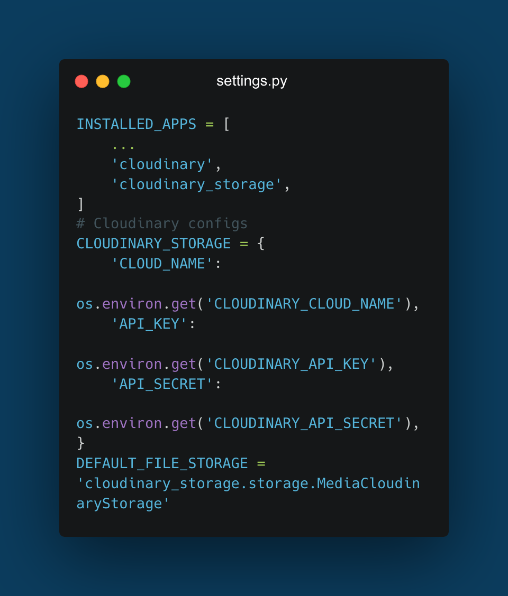

Case Study:
Recipe
App👩🍳
Overview
The Recipe App is a full-stack web application that allows users to create, search, and manage recipes. It includes an admin panel for data management and an analytics dashboard for visualizing recipe trends and ingredient usage.
challenge
The primary goal was to demonstrate proficiency in Django, Python, and full-stack web development by creating a functional, user-friendly web application. The app was designed to showcase skills in web application development, database management, user authentication, and data visualization.
requirements
- Handles user input errors with clear messages.
- Uses a local PostgreSQL database (SQLite for development).
- Provides a user-friendly interface with clear menus and prompts.
- Includes well-documented code, tests, and a `requirements.txt` file.
- Includes a README for setup and usage instructions.
role
Full Stack Developer, with a focus on backend development using Django and Python.
project scale
Covered key milestones including:
- Setting up Django and creating models for recipes and ingredients
- Implementing user authentication and admin functionality
- Developing search functionality and chart analytics visualization
- Deploying the app to Heroku with a PostgreSQL database
tools used
The Recipe App was developed using the following technologies and assets:
- Django: For backend development and web application framework
- SQLite: For development database management
- PostgreSQL: For production database management
- Heroku: For deployment and hosting
- Matplotlib: Library for data visualization
- Django Testing Framework: For automated testing and code reliability
Approach
I reviewed the exercises in my Python specialization course and integrated the relevant key features step by step.
features
 User Authentication: Users can log in and log out securely.
User Authentication: Users can log in and log out securely.- Recipe Management: Users can create and browse recipes that include name, description, ingredients, prep time, cook time, difficulty, and pictures.
- Search Functionality: Users can search for recipes based on name, ingredients, or difficulty.
 Recipe Details: Users can display extended details for selected recipes.
Recipe Details: Users can display extended details for selected recipes.- Admin Dashboard: Admins can manage users and recipes with CRUD capabilities.
- Analytics Charts: Users can generate charts to visualize data for ingredient frequency, recipe difficulty percentage, and total time per recipe.
development process
setup
Set up the Django project, created virtual environments, and installed necessary dependencies. Configured the project structure and initialized the database.
models & database
Defined Django models for recipes and ingredients, and registered them with the admin panel. Used SQLite for development and PostgreSQL for production.
views & templates
Developed views and templates to render web pages, handle URL routing, and display recipe information. Created forms for user input and error handling.
user authentication
Implemented user authentication using Django's built-in auth module. Added login, logout, and view protection features.
search & analytics
Added search functionality for recipes based on ingredients. Developed an analytics dashboard to visualize recipe trends and ingredient usage.
deployment
Prepared the app for deployment by configuring settings, updating dependencies, and deploying to Heroku with a PostgreSQL database.
Summary
challenges faced
Initially, I deployed with a Postgres setup and used WhiteNoise for static files, but user-uploaded images didn't display correctly. After troubleshooting without success, a fellow student mentioned using a hosting service.
After some research I decided on Cloudinary, which offered a generous free tier, matching the needs of my project. I integrated it with Heroku using environment variables (Figure 1) and the issue was resolved, allowing images to render properly in templates.
Figure 1. Cloudinary Configuration in Django Settings.
what was learned
Building the Recipe App allowed me to deepen my understanding of Django, Python, and full-stack web development. I gained hands-on experience with database management, user authentication, and data visualization, which prepared me for more complex web development projects in the future.
Overall, I'm happy with the outcome. This project not only showcased my technical skills but also demonstrated my ability to solve real-world problems through efficient and user-friendly web applications.